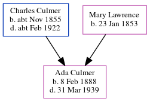

Ada Elsie Culmer 1888 - 1939
[ Home ] | [ Calendar ] | [ Surnames Index ] | [ Census Index ] | [ Family History ]The child of Charles Culmer (a coal dealer) and Mary Lawrence, Ada Culmer, the second cousin twice-removed on the mother's side of Nigel Horne, was born in Faversham, Kent, England on Feb 8, 18881,2,3,4 and baptized there on Mar 9, 1888. She went to Gordon Road School, Strood, Kent, England
During her life, she was living at 56 Tanners Street in Faversham on Apr 5, 18911; and at Cecil Avenue in Strood on Mar 31, 19012.
She died on Mar 31, 1939 in Essex, England4 and was buried at Old & Cuxton Road Cemeteries in Strood on Apr 8, 19395.
Parents
- Charles was born c. Nov 1855
- Mary Ann was born on Jan 23, 1853
Citations
- 1891 England, Wales & Scotland Census - Findmypast (was age 3 and the daughter of the head of the household)
- 1901 England, Wales & Scotland Census - Findmypast (was age 13 and the daughter of the head of the household)
- England & Wales births 1837-2006 - Findmypast
- England & Wales deaths 1837-2007 - Findmypast
- Kent Burials - Findmypast
Media
1901 England, Wales & Scotland Census - GBC/1901/0003111595
England & Wales births 1837-2006 - BMD/B/1888/1/AZ/000135/340
National School Admission Registers & Log-books 1870-1914 Transcription - GBOR-SCHOOL-AD-10375649
England & Wales deaths 1837-2007 - BMD/D/1939/2/AZ/000198/110
Kent Burials - KENT/FHS/BUR/CIVIL/145773
Family Tree
Generated by ged2site. Last updated on Jun 11, 2024